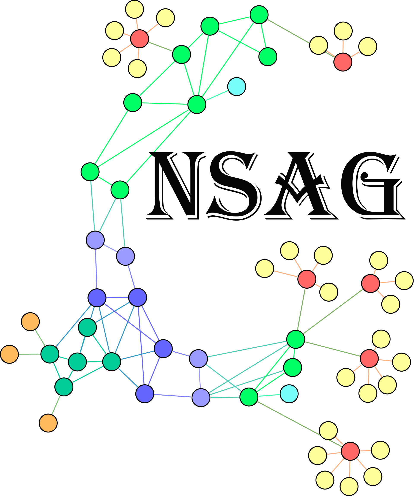

Full Name:Network Science and Application Group
Fields:Social Network Analysis,Artificial Intelligence
Interests:Community Discovery, Network Representation Learning, Topic Model
contact
Office: Room B216, Building 55, No. 135, Yaguan Road, Haihe Education Park, Jinnan District, Tianjin City, China, 300072
E-Mail: xxxxxx@tju.edu.cn
Join us
People who are interested in research and development in this field are welcome to join our team!
Group Information
Network Science and Application Group in Tianjin University is committed to the study the complex networks and its applications with the deep learning and probability graph model. It includes more than 20 researchers.
Reserches
| Complex Networks |
| Deep Learning |
| Probability Graph Model |
News |
Members

Publications(所有人的都整理放在这里)
2020 and beyond:
- Di Jin, Ge Zhang, Kunzeng Wang, Pengfei Jiao, Dongxiao He, Francoise Fogelman-Soulié, Xin Huang, Detecting Communities with Multiplex Semantics by Distinguishing Background, General and Specialized Topics, TKDE, 2020 In IEEE Transactions on Knowledge and Data Engineering [PDF] [Slides]
2019:
- Di Jin, Rui Li, Junhai Xu, Multiscale Community Detection in Functional Brain Networks Constructed using Dynamic Time Warping,2019 In IEEE Transactions on Neural Systems and Rehabilitation Engineering [PDF] [Slides]
2018:
- Di Jin, Ge Zhang, Kunzeng Wang, Pengfei Jiao, Dongxiao He, Francoise Fogelman-Soulié, Xin Huang, Detecting Communities with Multiplex Semantics by Distinguishing Background, General and Specialized Topics, TKDE, 2020 In IEEE Transactions on Knowledge and Data Engineering [PDF] [Slides]
2017:
- Di Jin, Ge Zhang, Kunzeng Wang, Pengfei Jiao, Dongxiao He, Francoise Fogelman-Soulié, Xin Huang, Detecting Communities with Multiplex Semantics by Distinguishing Background, General and Specialized Topics, TKDE, 2020 In IEEE Transactions on Knowledge and Data Engineering [PDF] [Slides]
2016:
- Di Jin, Ge Zhang, Kunzeng Wang, Pengfei Jiao, Dongxiao He, Francoise Fogelman-Soulié, Xin Huang, Detecting Communities with Multiplex Semantics by Distinguishing Background, General and Specialized Topics, TKDE, 2020 In IEEE Transactions on Knowledge and Data Engineering [PDF] [Slides]
2015:
- Di Jin, Ge Zhang, Kunzeng Wang, Pengfei Jiao, Dongxiao He, Francoise Fogelman-Soulié, Xin Huang, Detecting Communities with Multiplex Semantics by Distinguishing Background, General and Specialized Topics, TKDE, 2020 In IEEE Transactions on Knowledge and Data Engineering [PDF] [Slides]
Projects
| 2018.01 – 2021.12 | National Natural Science Foundation of China: Research on accurate semantic community detection in large-scale complex networks with content (61772361). Jan 2018 - Dec 2021. (Project leader) |
| 2018.01 – 2020.12 | 国家重点研发计划子课题1 |
| 2018.07 –2021.06 | 国家重点研发计划子课题2 |
| 2014.01 – 2016.12 | National Natural Science Foundation of China: Research on hybrid node-link partitioning approaches for discovering overlapping communities in complex networks (61303110) |
| 2014.01 – 2016.12 | PhD Programs Foundation of Ministry of Education of China: Research on unified node-link model for detecting overlapping communities in complex networks (20130032120043). Jan 2014 - Dec 2016. (Project leader) |
| 2015.01 – 2016.12 | Peiyang Scholar Foundation of Tianjin University: Finding overlapping communities, hubs and outliers together in complex networks (2015XRG-0007). Jan 2015 - Dec 2016. (Project leader) |
| 2013.01 – 2014.12 | Open Project Program of Key Laboratory of Symbolic Computation and Knowledge Engineering of Ministry of Education of China: Study on community detection in complex networks based on Markov dynamics (93K172013K02). Jan 2013- Dec 2014. (Project leader) |
| 2013.01 – 2014.12 | Independent Innovation Foundation of Tianjin University. Jan 2013 - Dec 2014. (Project leader) |
Resources
| 2019 | ♦ACM中国天津分会新星奖 |
| 2019 | ♦智能与计算学部优秀青年人才成长助推计划 |
| 2014 | ♦Peiyang Scholar Award of Tianjin University |
| 2012 | ♦Best Paper Award in Acta Automatica Sinica, 2012 |
| 2011 | ♦Scholarship Award for Excellent Doctoral Student granted by Ministry of Education of China, |